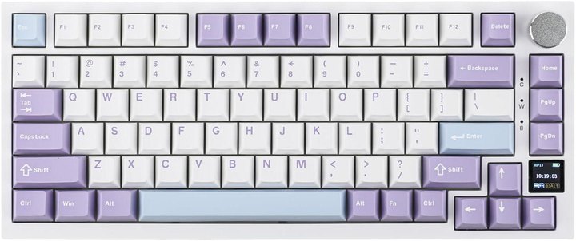

Я б дуже хотів собі механічну клавіатуру Ajazz AK820 pro у фіолетовому стилі, з маленьким екранчиком для виводу інформації про ПК, та колесиком для регулювання гучності
Ось чому я її так хочу:
- 1: Вона дуже гарна та компактна
- 2: На неї дуже приємно натискати, тому що в неї приємні PBT кейкапи
- 3: За допомогою неї я навчусь друкувати в сліпу, цей навик знадобиться мені ще не раз в майбутньому
- 4: В клавіатури є підтримка Hot-swap
- 5: В неї є декілька рівнів шумоізоляції
- 6: В неї є прекрасна RGB підсвітка
Про мене
Мене звати Саша, я з Хмельницького і мені 11 років, я займаюсь програмуванням та цікавлюсь комп'ютерами. Я вирішив оригінально росзказати про мої побажання отож написав цей сайт. Також я хочу стати програмістом і хочу цю клавіатуру, щоб мені було зручно друкувати та писати код, так в мене буде ще більше мотивації стати програмістом